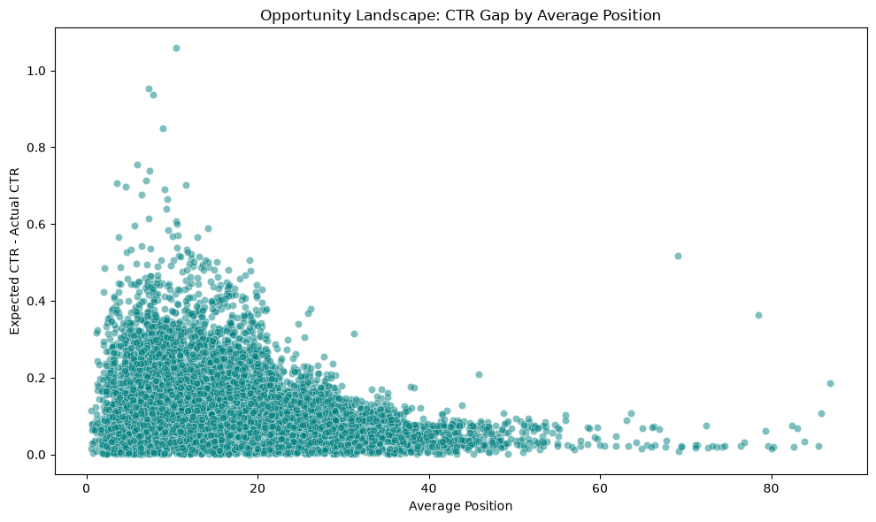
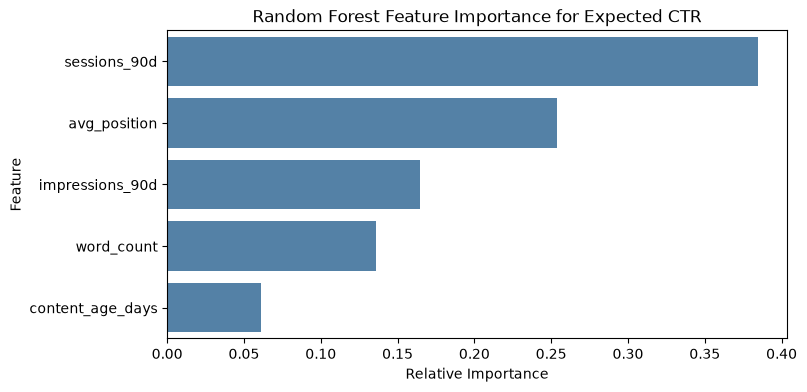
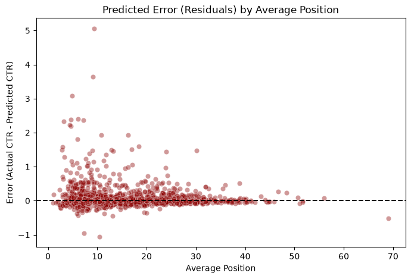

A position-tier baseline is what most content teams already use, informally, when they eyeball rank and guess. This paper tests whether a model trained on observable search signals can beat that guess on the same held-out pages — and turn the gap into a ranked action queue.
RMSE on CTR, held-out client domains, same 80/20 grouped split for both methods. Lower is better. Full method in §04, full table in §05.
This study asks which historically underperforming pages will earn the highest engagement lift if refreshed — the question every content team faces with more URLs than hours to maintain them. It draws on FlyRank's anonymized 90-day search-performance release — impressions, position, content age, word count, and sessions — for a mid-panel slice of production pages. We compared a rigid position-tier median baseline against a Random Forest Regressor trained on the same observable signals, validated on client domains the model never saw during training. The model's prediction error came in 19.4% lower than the baseline's on that held-out set, surfacing non-linear opportunity the tier rule misses entirely. The output is a ranked action queue that lets content teams point refresh hours at the highest-ROI pages first, instead of the loudest ones.
Most content teams maintain far more URLs than they have hours to maintain them. When it's time to decide what gets refreshed this sprint, the default heuristic is rank: pages sitting just outside page one get the attention, on the assumption that a nudge in position or a metadata rewrite will convert visibility into clicks. That heuristic is cheap to apply, but it treats every page in a rank tier as interchangeable — it can't tell a page that's underperforming its tier badly from one that's already earning everything its position can give it.
This paper tests a narrower, more falsifiable question: given only the search-performance signals a team already has — impressions, position, content age, length, sessions — can a model separate pages with a real, fixable CTR gap from pages that are already at their ceiling, better than a simple "median CTR for this rank tier" baseline can? If it can, the gap between predicted and actual CTR becomes a sortable queue, and refresh hours stop being spent by instinct.
The decision this supports is deliberately narrow: where to spend writer and SEO hours this sprint, not whether a given rewrite will work. That distinction matters throughout — see Limitations, §06.
The full FlyRank search-performance warehouse is a gated release, accessed with a read token. This analysis runs on a single anonymized, aggregated starter table pulled from that warehouse, not the raw warehouse itself.
content_refresh_anonymized.csv — the FlyRank anonymized starter dataset, a mid-panel slice.health_score, priority_score) were left out of the feature set to avoid circular logic — training a model to reproduce a score it was meant to independently evaluate. clicks_90d was also excluded: alongside impressions_90d it algebraically reconstructs the label (ctr), which would leak the target rather than predict it.impressions_90d, avg_position, content_age_days, word_count, sessions_90d.ctr — observed click-through rate over the 90-day window.random_state=42, trained on the same features and split as the baseline, so the comparison is apples-to-apples.client_id forces training on one set of domains and testing on domains the model has never seen — without this, a model can "memorize" a site's architecture rather than learn a transferable signal.clicks_90d was the one feature removed as a result — see Data, §03.Both methods were scored on the identical held-out 20% of client domains, using root-mean-squared error (RMSE) on CTR. Lower is better.
| Method | RMSE |
|---|---|
| Position-tier baseline (base rate) | 0.521008 |
| Random Forest Regressor | 0.419816 |
The baseline is the base rate here: it's what a team would predict with no model at all, using only rank tier. The Random Forest's error came in 19.4% lower than that base rate on unseen domains — a measured reduction in prediction error, not a promised lift in any single page's CTR. See Limitations, §06.

Reading rf_model.feature_importances_ answers a question the RMSE table can't: is the model just re-deriving rank, or has it found something the position-tier baseline misses?
| Feature | Importance |
|---|---|
| sessions_90d | 0.384408 |
| avg_position | 0.253978 |
| impressions_90d | 0.164532 |
| word_count | 0.136093 |
| content_age_days | 0.060989 |
Actual visitor behavior (sessions_90d) outweighs rank itself — avg_position, the entire basis of the baseline, is only the second-most-important signal. content_age_days barely moves the prediction: on its own, "this page is old" is weak evidence for prioritizing a refresh.

The residual plot below (actual CTR minus predicted CTR) shows the largest errors sitting at positions 1–3, then tightening toward zero from around position 10 onward.
The feature set has no query-intent signal, so the model can't tell a branded, navigational query (which can pull 80%+ CTR at position 1) from a broad informational one (which might only pull 15% at the same position). Net effect: it tends to underpredict CTR for branded top-of-SERP pages and overpredict it for informational ones in that same slot — a real limitation of this feature set, not a modeling bug. It's why the No-go list in §07 treats position-1 branded pages carefully rather than as safe to auto-flag.

What this work cannot claim, stated as plainly as the result itself:
The action playbook this model's output supports, in priority order.
Pages with more than 5,000 impressions but missing their expected CTR by more than 5%. Immediate priority for title tag, meta description, and search-intent review — the traffic is already there.
Pages ranking in positions 1–10 but losing clicks to competitors, with a gap above 3%. Position is already earned; the loss is happening in the snippet.
A real but smaller predicted gap. Route to the standard monthly refresh backlog rather than an active sprint.
Do not automate metadata deployment on model output alone. Move carefully — or not at all — on pages holding position 1 for core branded terms; the downside of an unforced error there outweighs the modeled upside.
The full analysis — data loading, the grouped split, both models, and the chart above — runs top to bottom from the notebook linked below. Both the baseline and the Random Forest use random_state=42, so a fresh run should reproduce the numbers in §05 exactly. Anyone with repo access can rerun or inspect it directly.
Built on the FlyRank ML Internship dataset. Thank you to the FlyRank team for the anonymized starter release this research runs on.